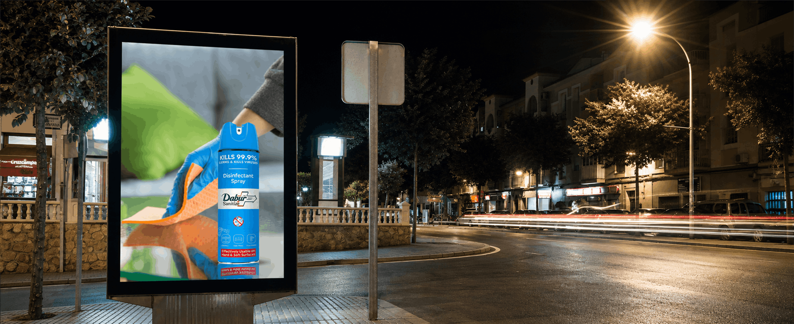
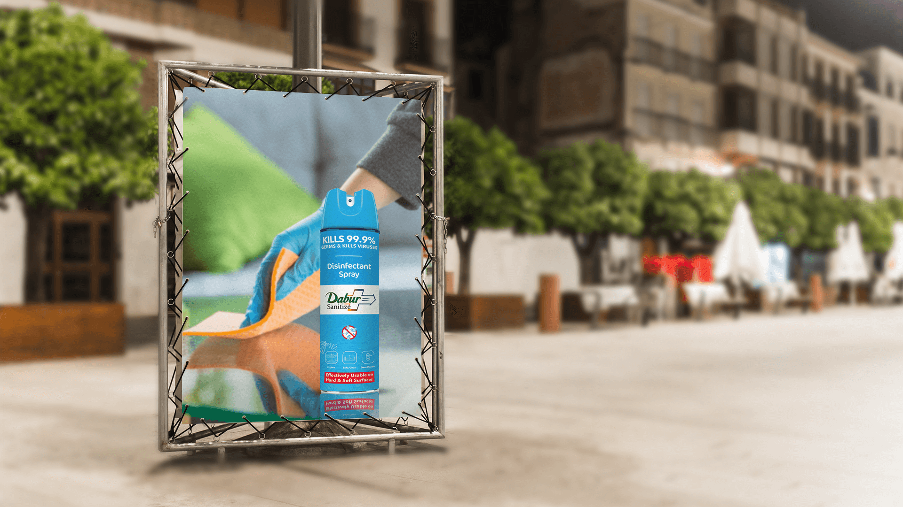
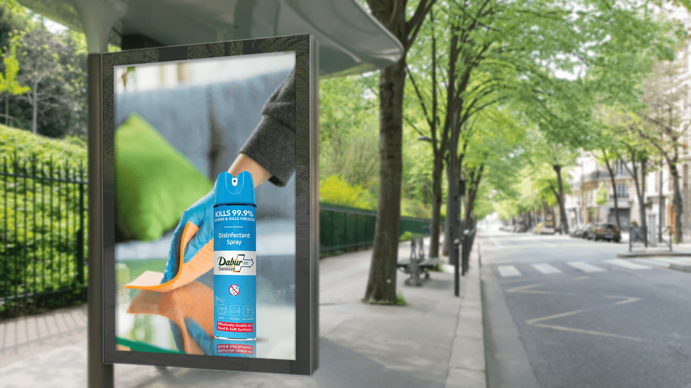

The work had to suggest usefulness across multiple household touchpoints without becoming a catalogue of applications.
← Back to workProtection moves.
Dazzl · Disinfectant Spray
Protection moves.
Across every surface.

Project overview
One portable format.
More places to protect.
Dazzl Disinfectant Spray needed an outdoor expression that made versatility immediately understandable across everyday cleaning moments.
The creative combines an upright aerosol pack with a familiar wiping action. The pack signals quick application; the cloth and reflected surface demonstrate practical use without adding explanatory clutter.
- Product
- Disinfectant Spray
- Surfaces
- Hard + Soft
- Promise
- 99.9% Germ Kill
- Expression
- Mobile + Direct
The communication challenge
Communicate versatility.
Keep the message singular.
Format, protection promise and cleaning relevance needed to resolve during a brief outdoor viewing moment.
The creative device
The pack stands ready.
The action completes the story.
The tall blue pack gives the composition a strong vertical anchor and makes the portable spray format instantly recognisable.
Behind it, the gloved hand and orange cloth create a diagonal gesture across a reflective surface—showing practical care while keeping the product dominant.
The fast-read system
Reach. Wipe.
Reassure.
- 01
The format
A compact aerosol silhouette communicates portable protection.
- 02
The action
The cloth turns the product promise into a familiar cleaning moment.
- 03
The proof
The on-pack germ-kill message provides a clear reason to believe.
The work in context
One portable protector.
Two outdoor environments.
Both supplied applications retain their complete composition and original aspect ratio, keeping the spray, cloth action and surrounding display context visible without cropping.


The outcome
Versatility made clear.
Protection made portable.
The final print system gives the aerosol product a distinctive place within the Dazzl range, balancing a broad surface proposition with simple, product-first communication.
Format recognition
The tall pack immediately distinguishes the portable spray solution.
Usage clarity
The wiping action connects the product to everyday cleaning.
Broad relevance
Hard-and-soft-surface cues extend the product’s practical role.
Where life happens.Protection can follow.
Need a versatile product story made simple?